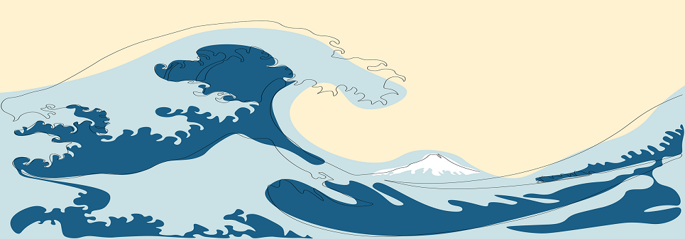

Tendances WEB 2023
Nous sommes partout, à tout moment et tout le monde à la fois.
Home
|
1
|
2
|
hover animations
w3-animate
;-) CTRL + F5 to "RE"-animate ^^

w3-hover-opacity
Bouton qui change au survol
w3-spin
Liens utiles
Building a Responsive Web Site From Scratch
Flat design colors
Almost flat
acquires more depth, brighter colors, complex shadows, and dimension.
Diaporama
Effets stylés
Animations stylés